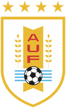

El libro del club
Centro Atlético Lito · Montevideo · 1917
- I El club Del bar Manuelito a la cancha
- II Plantel Primer equipo y formativas
- III Fixture y tabla Domingo a domingo
- IV Noticias Partes de prensa
- V Hacete socio Cuotas y alta
- VI Contacto Sede, prensa y marca
Tomo del club · 2026 Hacete socio


Canción oficial
Lito querido,
cuadro invencible,
fuerte, aguerrido e irresistible.
Siempre Centro Lito adelante,
triunfante, triunfante,
porque tiene garra y corazón,
campeón, campeón.
Que proclaman tus parciales,
que son inmortales,
tu gloria y honor.
Centro Atlético Lito · Montevideo · 1917